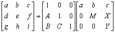
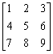
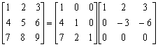

三階矩陣LU分解
程式可以將個三階矩陣分解為一個三階下三角矩陣及一個三階上三角矩陣
程式編寫日期: 2006年12月25日
分解的形式:

註: 輸入數據後，程式會先計算三階下三角矩陣 (A、B及C) 再計算三階上三角矩陣(M、X及Y)
程式(45步)
| 1 | KAC | 2. | ENT | 3. | 1/x | 4. | Kin 1 | 5. | Kin 2 |
| 6. | ENT | 7. | Kin - 3 | 8. | Kin - 4 | 9. | ENT | 10. | Kin - 5 |
| 11. | Kin - 6 | 12. | ENT | 13. | Kin × 1 | 14. | Kout 1 | 15. | Kin × 4 |
| 16. | Kin × 5 | 17. | ENT | 18. | Kin + 4 | 19. | ENT | 20. | Kin + 5 |
| 21. | ENT | 22. | Kin × 2 | 23. | Kout 2 | 24. | Kin × 3 | 25. | Kin × 6 |
| 26. | ENT | 27. | Kin + 3 | 28. | ENT | 29. | Kin + 6 | 30. | Kout 1 |
| 31. | HLT | 32. | Kout 2 | 33. | HLT | 34. | Kout 4 | 35. | Kin ÷ 3 |
| 36. | Kout 3 | 37. | HLT | 38. | × | 39. | Kout 4 | 40. | HLT |
| 41. | Kout 5 | 42. | HLT | 43. | = | 44. | Kin - 6 | 45. | Kout 6 |
LRN 模式輸入程式(只供 fx-3800P使用，程式長度: 45步 )
| KAC | ENT | 1/x | Kin 1 | Kin 2 |
| ENT | Kin - 3 | Kin - 4 | ENT | Kin - 5 |
| Kin - 6 | ENT | Kin × 1 | Kout 1 | Kin × 4 |
| Kin × 5 | ENT | Kin + 4 | ENT | Kin + 5 |
| ENT | Kin × 2 | Kout 2 | Kin × 3 | Kin × 6 |
| ENT | Kin + 3 | ENT | Kin + 6 | Kout 1 |
| HLT | Kout 2 | HLT | Kout 4 | Kin ÷ 3 |
| Kout 3 | HLT | × | Kout 4 | HLT |
| Kout 5 | HLT | = | Kin - 6 | Kout 6 |
| MODE . |
例題: 求以下三階矩陣的LU分解

按 P1 再按 1 RUN 2 RUN 3 RUN 4 RUN 5 RUN 6 RUN 7 RUN 8 RUN 9
RUN (顯示4) RUN (顯示7) RUN (顯示2)
RUN (顯示-3) RUN (顯示-6) RUN (顯示0)
因此
